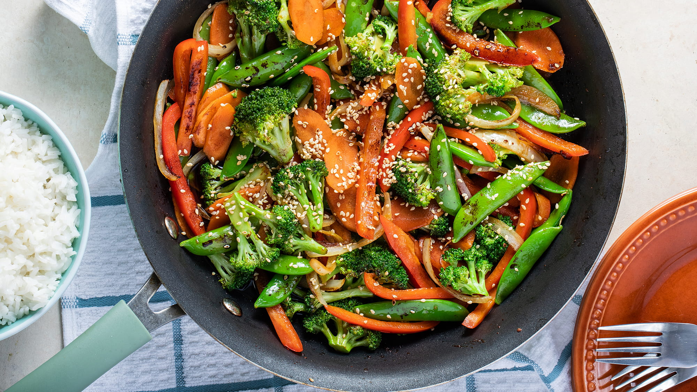
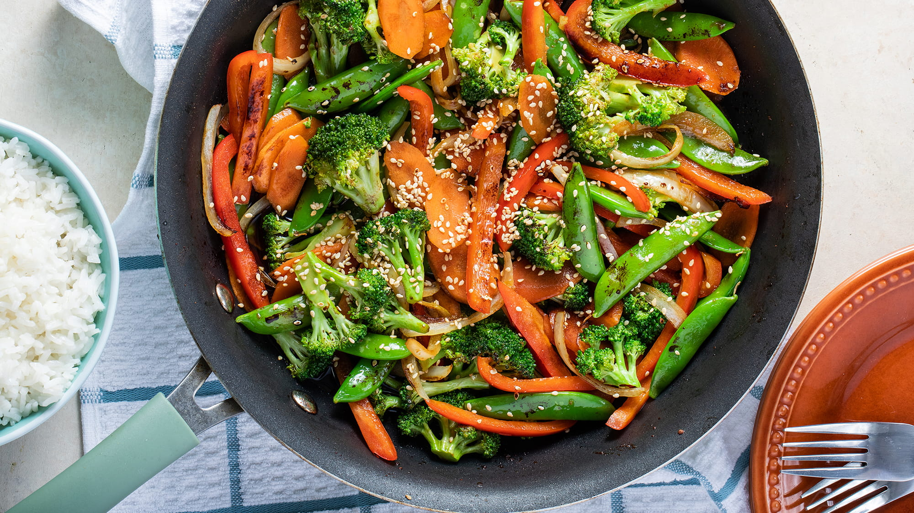

Every night, my mom and dad prepared substantial, nutrient-rich, and mouth-watering meals. I grew up to know healthy and delicious to be synonyms, and I found myself loving to learn about nutrition and began trying out my favorite recipes and replacing them with vegan ingredients. Although I am not vegan, I find myself feeling my best when eating a plant-based diet, and I make it my goal to try and create dishes that no one would ever think to be dairy and meat-free.
When moving to College, my spacious kitchen at home became replaced by an electric pan from Amazon and a toaster oven that I have caught on fire one too many times. Finding healthy meals that were easy to prepare on the floor of my dorm was a struggle, and TopRamen and Kraft mac & cheese were often too delicious to turn down. In my Blog, I will be sharing with you delicious recipes that, although they can't compare to Instant noodles' convenience, are easy to whip up in a College apartment- or even a dorm if you are determined enough.

 
